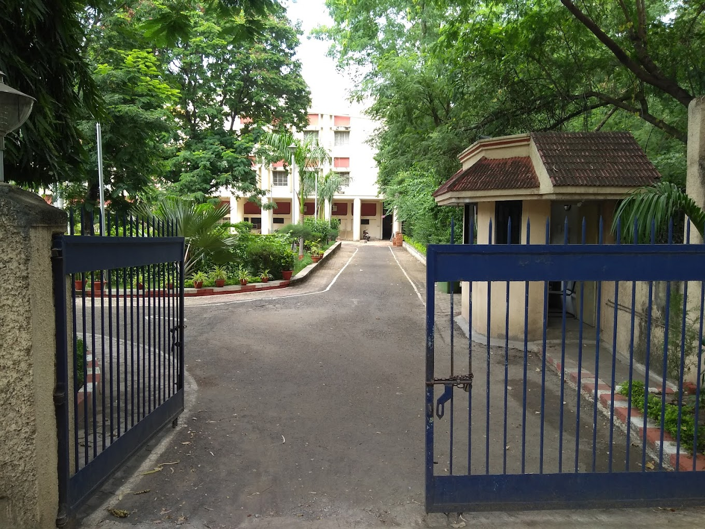

About MRSAC
The Maharashtra Remote Sensing Application Centre (MRSAC) is an autonomous organization under the Department of Planning, Government of Maharashtra. We specialize in remote sensing, GIS, and spatial data infrastructure to support planning and development across Maharashtra.
Our work includes land use planning, agriculture monitoring, urban planning, and disaster management. We collaborate with government departments and institutions to provide geospatial data and analysis for informed decision-making.
"Empowering Maharashtra with advanced geospatial technology for sustainable development."